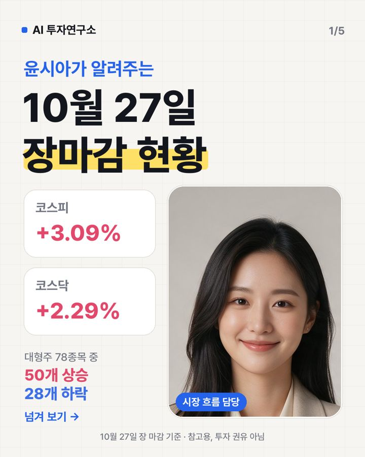

10월 27일 장마감 요약 — 코스피 +3.09%, 코스닥 +2.29%
2026-10-27 장 마감 기준 · 진행 윤시아 (시장 흐름)

오늘 코스피는 5,638.34로 +3.09%, 코스닥은 743.83로 +2.29% 마감했어요. 대형주 78종목 중 50개가 오르고 28개가 내렸어요. 원/달러 환율은 1,327원이에요.
지수 흐름
| 종가 | 하루 | 1주 | 1달 | |
|---|---|---|---|---|
| 코스피 | 5,638.34 | +3.09% | +1.54% | -20.37% |
| 코스닥 | 743.83 | +2.29% | -4.88% | -11.92% |
많이 오른 종목
- 삼성전기 +9.66% · 1,226,000원
뉴스관련 기사: 되살아난 AI 투심에… 코스피도 '들썩' [세계 증시 흔드는 AI] (파이낸셜뉴스) - SK +8.84% · 511,000원
뉴스관련 기사: 앤트로픽發 훈풍…삼성전자 4%·SK하닉 5% 상승 마감[핫스탁](종합) (뉴시스) - 솔브레인 +6.94% · 308,000원
호재신한투자증권이 목표가를 420,000원으로 올려 호재라 기대돼요 - 원익IPS +6.70% · 95,600원
뉴스관련 기사: 삼전닉스 넘어 장비·기판주까지…앤트로픽 IPO에 반도체 '훨훨'[핫종... (뉴스1) - 에코프로 +6.52% · 75,200원
호재중국 배터리 업체에 조 단위 양극재 납품을 추진해 매출 기대감이 커졌어요.
많이 내린 종목
- JYP Ent. -10.11% · 37,800원
악재일본 투자그룹 인수설에 규제당국 경고·불확실성 커져 주가가 떨어졌어요 - 삼성바이오로직스 -5.04% · 1,376,000원
뉴스관련 기사: 일주일 후 글로벌 증시 판이 바뀐다…먼저 찜해볼까 [B급기자의 B급리... (한국경제TV) - 하이브 -4.30% · 169,000원
악재미국 자회사 지분을 3천782억원에 추가 매입해 현금 소진 우려 - 에스엠 -2.90% · 80,300원
뉴스관련 기사: 성장 멈춘 광고업계, 영화 제작·티켓사업 진출 (한국경제) - 케이티 -2.18% · 44,800원
뉴스관련 기사: AI 모델 선택·활용·보안까지…KT “토큰팩토리 하나로 끝~” (경향신문)
누가 사고 팔았나 (순매수)
| 외국인 | 기관 | 개인 | |
|---|---|---|---|
| 코스피 | +5,826억 원 | +2,824억 원 | -9,407억 원 |
| 코스닥 | +257억 원 | +1,507억 원 | -1,723억 원 |
내일 체크 포인트
- 외국인 흐름 — 오늘 코스피에서 +5,826억 원 순매수
- 국제유가 — 최근 한 달 +13.01%
- 미국 10년 금리 4.99% · 공포지수 VIX 17.7
- 20일 이동평균선 위에 있는 대형주 10/78종목
이 글은 공개된 시세·수급 데이터와 그날 뉴스 제목을 정리한 참고 자료이며 투자 권유가 아닙니다. 시세는 거래소 종가 기준이고, 투자 판단과 결과의 책임은 본인에게 있습니다.